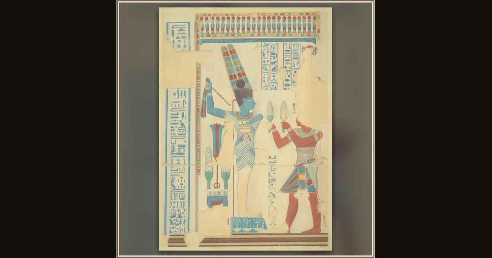

Darius I Offering to Amun, Temple of Amun at Hibis
Charles K. Wilkinson · 521–486 BCE · met
Wilkinson's painted facsimile shows Darius I in Egyptian dress offering to Amun at Hibis; Herodotus has just named him king over the Persian dominions (3.88.1) Explore its place in Herodotus's Histories, Book III, chapter 321.